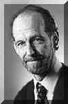
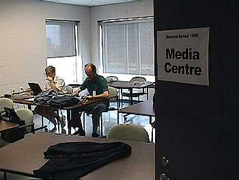

Backstage: Onsite / Media
Relations
Other Backstage features: Television |
Internet | Onsite
A lot of on-site commuications is underway
as well -- news releases, members' daily reports, backgrounders, etc. They are
produced under the direction of Sam Carriere, a full-time member of the national church's
Information Resources division. Sam is responsible for media relations at General
Synod, and is joined by Lorie Chortyk,
APR, and Joan Shanks.
Lorie is the communications officer for the Diocese of New
Westminster and is a director of the Canadian Public Relations Society. Joan is
priest of St. Margaret of Scotland from the host diocese of Montreal.

Margaret Shawyer, editor of the Daily Report for members,
works with Sam Carriere, coordinator of media relations
in the media centre (where Internet broadcasting is
also housed).